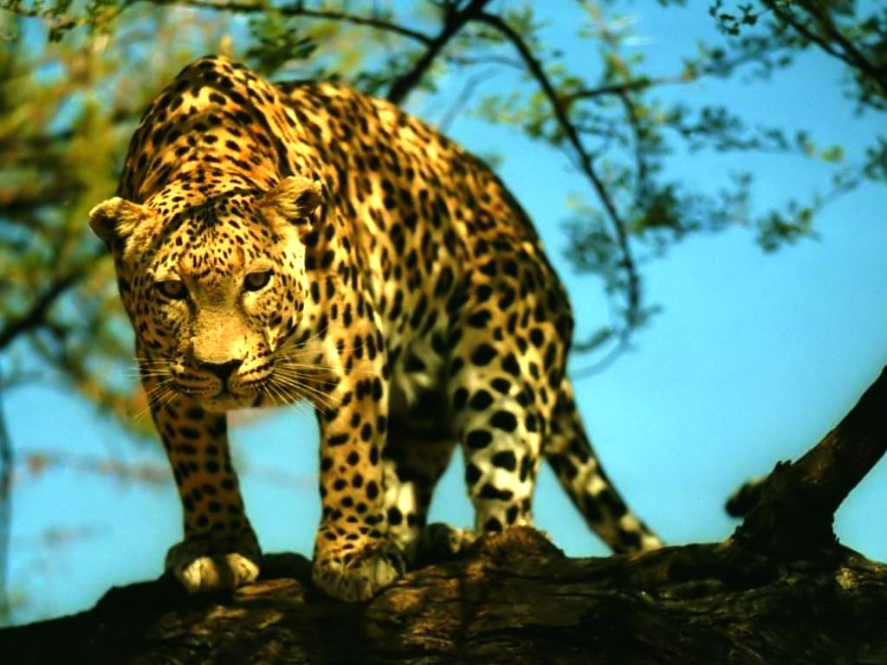
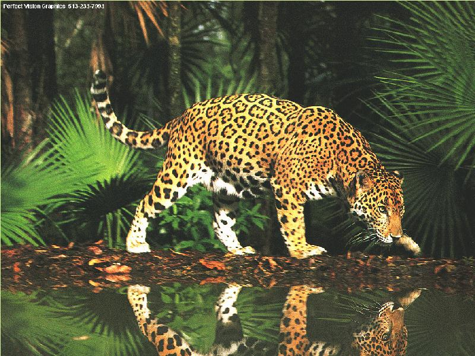

Durata de viata: Pana la 20 de ani
Unde traieste (mediu de viata):Paduri umede,deserturi,munti si campii
Dieta: Carnivor
Clasa: Mamifer
Nume stiintific: Panthera onca
Ce mananca (mancarea principala): Cerbi si caprioare
Predatori: Oamenii
Fotografia primului jaguar observat in partea centrala a Mexicului a facut deja inconjurul lumii, readucand speranta pentru ecologistii mexicani care se lupta de ani de zile pentru salvarea de la disparitie a celei mai mari feline din America.Un jaguar mascul a fost fotografiat de trei ori cu ajutorul unei camere actionate cu o trapa, in decursul zilei de 10 februarie, anul curent, undeva in salbaticia rezervatiei Sierra Nanchititla. Alaturi de cele trei fotografii, cercetatorii au descoperit nu mai putin de 132 mostre de excremente in cadrul aceleiasi rezervatii, semn ca acolo ar mai trai si alti jaguari.
Un jaguar mascul a fost fotografiat de trei ori cu ajutorul unei camere actionate cu o trapa, in decursul zilei de 10 februarie, anul curent, undeva in salbaticia rezervatiei Sierra Nanchititla. Alaturi de cele trei fotografii, cercetatorii au descoperit nu mai putin de 132 mostre de excremente in cadrul aceleiasi rezervatii, semn ca acolo ar mai trai si alti jaguari.
Aceste feline impozante au disparut din majoritatea zonelor Mexicului, ultimul exemplar din rezervatia Sierra Nanchititla, fiind observat in anul 1900. Cauzele regresului jaguarilor din Mexic au fost determinate de defrisarile abuzive, vanatorea si traficul cu pui de jaguari. Zoologul Mexican Octavio Monroy-Vilchis din cadrul Universitatii Autonome de Stat din Ciudat de Mexico este de parere ca jaguarul fotografiat recent la altitudinea de 1 845 metri, se afla in cautarea si marcarea unui nou teritoriu.
Un studiu realizat de Centrul brazilian de cercetari si conservare a mamiferelor carnivore (Cenap) si publicat luni arata ca in prezent ar mai exista doar 250 de jaguari adulti in padurea de pe coasta Atlanticului, "numarul lor scazand cu 80% in ultimii 15 ani".
Cel mai ingrijorator este insa faptul ca numai 20% din animale (circa 50) sunt in prezent la varsta maturitatii sexuale, se arata in studiu. Intrucat jaguarul (Panthera onca) se afla la capatul lantului trofic, intreaga zona de biodiversitate de 7,4 milioane de hectare de pe coasta Atlanticului este amenintata, precizeaza Ronaldo Morato, seful Cenap, citat de cotidianul Folha din Sao Paulo.El arata ca jaguarii se hranesc cu erbivore ca cerbi si capibare, scaderea numarului lor putand duce la un grav dezechilibru de mediu si "la un sfarsit apropiat al padurii atlantice".
Printre cauzele care au dus la reducerea spectaculoasa a populatiei de jaguari se numara braconajul. Fermierii nu ezita sa omoare felinele daca le ucid vreo vaca, spune biologul Pedro Galetti in Folha. Cenap va incepe saptamana viitoare sa stranga noi informatii despre mamiferele din padurea atlantica, urmand sa utilizeze imagini din satelit pentru a identifica zonele din "Mata Atlantica" in care mai exista jaguari, pentru a le proteja mai bine habitatul. Padurea atlantica este ecosistemul care inregistreaza cea mai severa distrugere din Brazilia. Ea acoperea in trecut 15% din intreg teritoriul brazilian, 93% disparand intre timp. Au ramas doar 28.600 km2, cea mai mare parte in rezervatii forestiere, potrivit fundatiei SOS Mata Atlantica.
Curiozitati:
- Denumirea de Jaguar provine de la cuvantul "yaguar" al indienilor americani si inseamna "cel care ucide cu un salt". 
- Apa de colonie pentru barbati Obsession,marca Calvin Klein atrage felinele mari din jungla guatemaleza,printre care si jaguarul.
- Este singura felina din lume care nu toarce.
- Sunt animale singuratice si isi marcheaza teritoriul prin urina si prin sfasierea scoartei copacilor.
- Masculii adulti cantaresc de la 45 kg si pana la aproximativ 110 kg in unele cazuri, pe cand femelele au greutatea cuprinsa intre 45-90 kg.
- Perioada lor de imperechere este in lunile August si Septembrie.
- Dupa 100 de zile femela naste intre 1 si 4 pui, pe care la varsta de 6 luni ii invata sa vaneze, iar cand acestia implinesc 2 ani, isi parasesc mama.
- Fiind carnivori, se hranesc in principal cu caprioare, maimute, pasari, broaste, serpi, tapiri, aligatori, rozatoare.
- Adora sa "pescuiasca" si isi baga coada in apa pentru a atrage pestii.
- Jaguarii vad de 6 ori mai bine decat oamenii, in special pe intuneric.
- In principiu isi prinde prada de la sol, dar se intampla sa vaneze si din copaci, de unde ataca prada.
- Spre deosebire de alte feline, jaguarul adora apa si sa inoate.
- Desi se spune ca in toata lumea, mai traiesc doar 15,000 de jaguari, acestia sunt imprastiati in tari precum: Argentina, Brazilia, Bolivia, Belize, Costa Rica, Ecuador, Guiana Franceza, Mexico, Columbia, Peru, Paraguay, Panama, Statele Unite, Gautemala, Guyana, Honduras, Venezuela, Suriname si Nicaragua.

- Desi nu sunt deloc niste animale de mari dimensiuni, jaguarii pot vana si animale de 300 kg, ceea ce inseamna mai mult decat dublul greutatii lor.
- Mayasii il considerau Zeul care ajuta la comunicarea dintre morti si vii.
- Este poreclit "Fiara care-ti devoreaza sufletul!"
- Este singurul pradator care ucide muscandu-si victimele de craniu.
- Jaguarul detine din start unele recorduri in lumea felinelor.